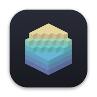

Open source
-
Алаас (Alaas) AI-made
A first-person walk through a traditional Sakha summer homestead that teaches Sakha culture.
Browser game · three.js, WebGPU · Sakha, English, Russian
-

VoxLook AI-made
Quick Look for MagicaVoxel .vox files: Finder thumbnails and a 3D space-bar preview.
macOS 14 or later · Swift